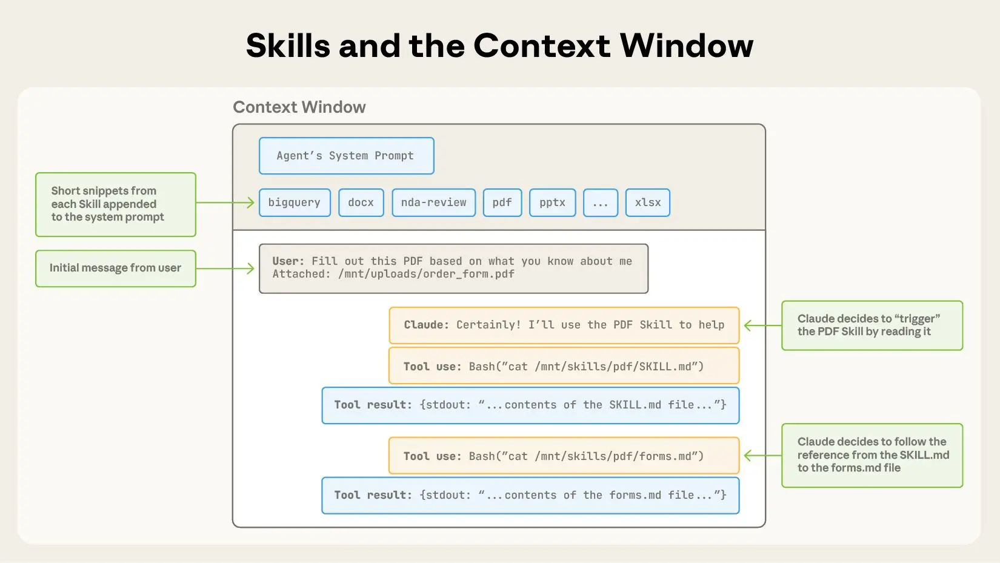
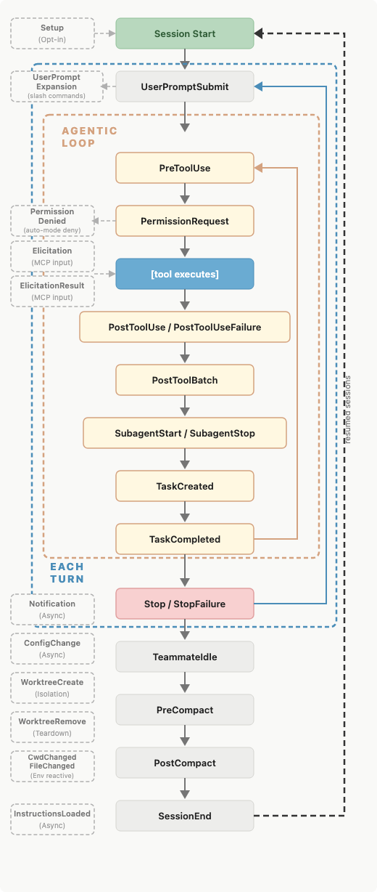

Claude Code · Steering System「两克伴」出品
Claude Code · Steering
Claude Code
规则到底该放哪？
真正的问题不是规则不够多，而是规则放错层级：常驻事实、路径规则、流程技能、确定性钩子、隔离子代理，各自解决不同问题。
Always loadedCLAUDE.md
ScopedRules 按路径加载
On demandSkills 放流程手册
DeterministicHooks 做硬控制
IsolatedSubagents 清理噪声
High weightOutput Styles 慎用
Source: Anthropic BlogContext is a budget
Context Problem · Load Cost「两克伴」出品
先想清楚什么应该常驻上下文
CLAUDE.md 很方便，但它像常驻内存：会话开始就加载，压缩后还会重新注入。写得越多，越容易让当前任务背着无关规则前进。
Low scope
只影响某个目录
用路径限定 Rules，让规则在读到相关文件时再进入上下文。
Process
几十行操作流程
做成 Skill，按需加载步骤、脚本和资源，而不是常驻记忆。
Must run
每次都必须执行
用 Hooks 或权限做确定性控制，不要只靠模型记住一句禁止。
Choose by scopeReduce irrelevant context
Rules · Path Scoped「两克伴」出品
Rules 适合文件或目录相关约束
如果规则只和某类文件有关，就不要让它污染所有任务。路径限定规则会在 Claude 读取相关路径时才加载。
Use When
API 输入校验、迁移只能追加、某类 handler 的命名规则、某个目录的安全约束。
规则横跨多个文件，但不应该全局常驻。
它是约束，不是完整工作流程。
Example Shape
---
paths:
- "src/api/**"
---
API 处理前必须
先做输入验证。
Path = triggerRule = local constraint
Skills · Procedural Memory「两克伴」出品
Skills 适合可复用流程
部署手册、发布检查、代码审查、报告生成，这些不是常驻事实，而是被调用时才需要展开的程序。

Official article image · Skills load on demand
`SKILL.md` 负责触发和流程，scripts / references / assets 承载可复用资源。
不要把 Skill 当插件堆；真正有用的是经验、步骤、验收标准和失败处理。
Process belongs hereLoad on demand
Subagents · Isolation「两克伴」出品
Subagents 用来隔离噪声任务
子代理在独立上下文里运行，返回给主会话的只是结果和元数据。它适合会产生大量中间材料的辅助工作。
 Official article image · separate context window
Official article image · separate context window
Log Analysis日志扫描与错误归因
Deep Search深度搜索和资料收集
Audit依赖、权限、安全审计
Parent Clean主会话只保留结论
Separate windowReturn summary only
Hooks · Deterministic Control「两克伴」出品
Hooks 负责那些必须发生的事
当行为需要可靠执行时，指令不是最稳的工具。Hooks 可以在文件编辑、工具调用、会话事件等节点确定性触发。

需要每次都发生的动作，应该交给 Hooks 或权限，而不是只写一句“请记住”。
格式化编辑后自动运行 formatter / lint。
拦截`PreToolUse` 阻止危险命令。
Guardrails need codeNot just prompts
Output Styles · System Weight「两克伴」出品
Output Styles 权重高，所以更要少用
输出样式会注入系统提示，指令权重很高；但自定义样式可能替换默认编码行为。临时标准更适合 append-system-prompt。
Output Style
适合长期改变交互模式
例如主动、解释、学习这类稳定风格。使用前先看内置样式。
Append Prompt
适合临时追加标准
对一次调用添加编码规范、输出格式或领域知识，不改 Claude 的默认角色。
Tradeoff
越多指令，越容易互相稀释
追加系统提示也会增加输入成本，并可能降低严格遵循度。
High weightUse with restraint
Decision Checklist · Where It Belongs「两克伴」出品
一句话判断应该放哪里
这篇文章最有用的不是工具清单，而是一套放置逻辑：范围、成本、可靠性和是否需要隔离。
项目事实放 CLAUDE.md，但保持克制，别塞 30 行流程。
路径约束放 Rules，用 `paths` 控制什么时候进入上下文。
复用流程放 Skills，让操作手册和脚本按需加载。
大量中间结果交给 Subagents，主会话只接收总结。
必须执行用 Hooks 或权限，而不是“请记住不要这样做”。
Scope · Cost · ReliabilitySteer by layer